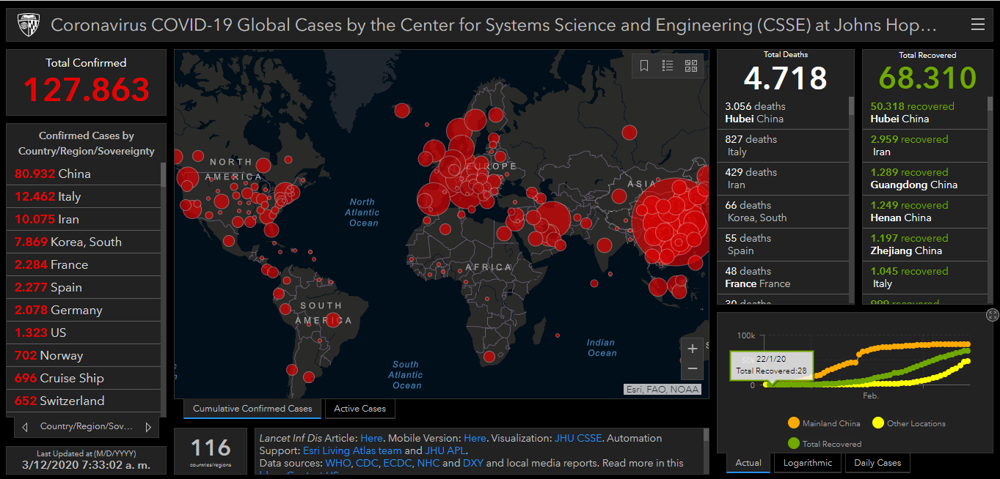

Blue dot
BlueDot “vigilancia automática de enfermedades infecciosas” es una empresa canadiense, que se formó en respuesta a la epidemia del SARS en 2003. La empresa aplica técnicas de machine learning para mantener seguimiento de la enfermedad en áreas como vigilancia, dispersión, impacto y comunicación.
BlueDot alertó a sus clientes sobre el riesgo del brote del coronavirus el 31 de diciembre del 2019, 9 días antes de que la Organización Mundial de la Salud diera el comunicado oficial.
Mediante herramientas como Machine learning y programación neurolingüística, BlueDot investiga y clasifica cerca de 100 0000 artículos, en 65 lenguajes diferentes, cada 15 minutos durante todo el día. En el caso del coronavirus, el 31 de diciembre el equipo de BlueDot, identificó varios artículos en chino que mencionaban 27 casos de neumonía, por causas desconocidas y todos asociados con un mercado en Wuhan. La información que brindo el programa ayudó a que los investigadores concluyeran que había un patrón muy similar al de la epidemia del SARS.
Después de que llamara la atención de los investigadores, se recurrió a la tecnología GIS (Sistema de Información Geográfica) e información sobre viajes aéreos. Por medio de esta tecnología se determinó la probabilidad de que las personas usaran ciertos aeropuertos y se intentó entender cómo las personas se estaban moviendo de Wuhan en esta época del año. En las áreas que se identificó que iba a llegar más gente se envió una alerta para que hospitales, aeropuertos, organizaciones mundiales y sus clientes pudieron tomar las acciones correspondientes. Además, publicó una lista que incluyó las ciudades más propensas a ser afectadas entre las que se encontraban Hong Kong, Tokio, Singapur y Bangkok, que como se sabe efectivamente estas fueron las que presentaron los primeros casos después de China.
El gran poder de esta empresa reside en que puede colectar, manipular y entender información de diferentes fuentes. El programa que utilizan toma información de fuentes oficiales como la OMS, datos no estructurados de redes sociales, foros en línea, periodistas locales, aeropuertos e informes de enfermedades de animales
" Si solo nos guiamos en la información de las agencias gubernamentales puede ser que no la obtengamos en la manera más oportuna o de la manera que nos gustaría" Kamran Kan CEO de BlueDot
La información brindada por BlueDot, permite anticiparse a los posibles riesgos que las enfermedades pueden causar en la sociedad. Como fue el caso del Zika, en el 2016 en el predijo que se iba a expandir por Florida, 6 meses antes de que pasara, así como en el 2014 se predijo que el Ébola iba a salir del oeste de África.
Mapeo del COVID-19
La tecnología GIS (Geographic Information System) permite relacionar grandes cantidades de datos con su ubicación geográfica. Herramientas como la minería y análisis de datos son utilizados en esta área para extraer información, y poder representarla. Actualmente diferentes instituciones están usando esta tecnología para darle seguimiento al COVID-19. Lo que ha permitido analizar la ubicación geoespacial de personas infectadas, y crear planes preventivos para controlar la expansión del virus.

La universidad Johns Hopkins es una de las instituciones que ha creado un mapa de calor que permite dar seguimiento a tiempo real de los casos reportados desde el pasado 22 de enero. La principal fuente de obtención de datos es la plataforma DXY la cual es administrada por miembros de la comunidad médica en china, y cada 15 minutos es actualizada semi- automáticamente con los datos de interés. Entre otras fuentes de información también se utiliza páginas de internet, noticieros y redes sociales.
El Dashboard interactivo muestra información sobre los casos, muertes y los recuperados de todos los países. Además todos los datos recolectados están disponibles de manera gratuita en un repositorio en Github.En el caso de China se muestra la información a nivel de provincia, y a un nivel de ciudad en Estados Unidos, Canadá y Australia.
El objetivo de esta tecnología es permitir a los investigadores e interesados rastrear la expansión y desarrollo del virus. Así se puede tomar las medidas de prevención adecuadas en las correspondientes regiones.
Google Deepmind
Para conocer cómo funciona un virus, es necesario conocer su estructura de proteínas, lamentablemente esto puede tardar varios meses. En este sentido, Deepmind la empresa de Google, se ha unido a los esfuerzos globales para combatir el coronavirus.
AlphaFold (uno de los sistemas de Deep Learning de Google Deepmind), por medio de una técnica de machine learning conocida como “free modeling” hizo predicciones de la estructura de varias proteínas asociadas con el SARS-CoV-2 (el virus que causa COVID-19) sin tener estructura de proteína similares, lo que puede proporcionar el conocimiento para desarrollar una potencial vacuna, o al menos las bases para una.
La organización ha publicado sus investigaciones para que puedan ser utilizadas por cualquier persona. En este enlace se encuentra como descargar los resultados de la investigación. Los esfuerzos de Deepmind permiten que cualquiera que esté interesado en aportar al desarrollo de conocimiento sobre este virus, pueda usar herramientas tan útiles como estas.
“Normalmente esperaríamos para publicar este trabajo hasta que haya sido revisado para una revista académica. Sin embargo, dada la seriedad potencial y la sensibilidad temporal de la situación, estamos lanzando las estructuras predichas como las tenemos ahora, bajo una licencia abierta para que cualquiera pueda usarlas.” El equipo de AlphaFold
Estas son solo algunas de las aplicaciones que ha tenido la ciencia de datos, el aprendizaje automático y la inteligencia artificial para hacer frente al COVID-19; es evidente que estas herramientas han sido primordiales para poder reaccionar de manera rápida y en conjunto con diferentes profesionales en el mundo. Parece ser que estas herramientas seguirán siendo un aliado para los equipos médicos y los gobiernos en lo siguientes años.